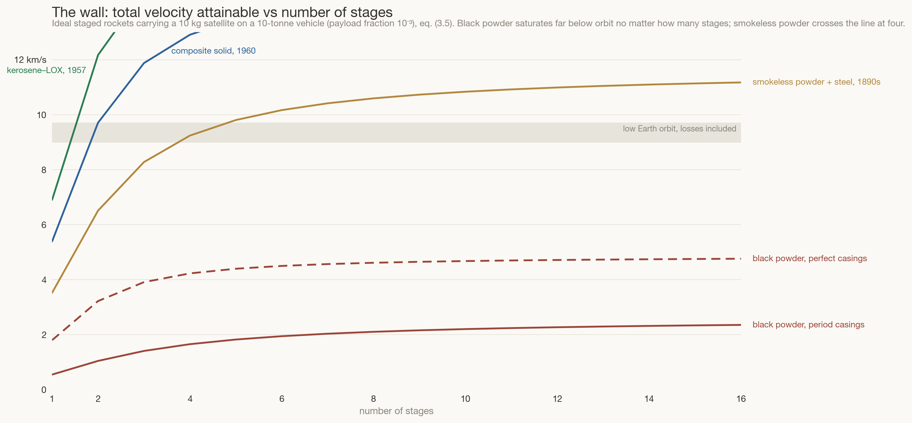
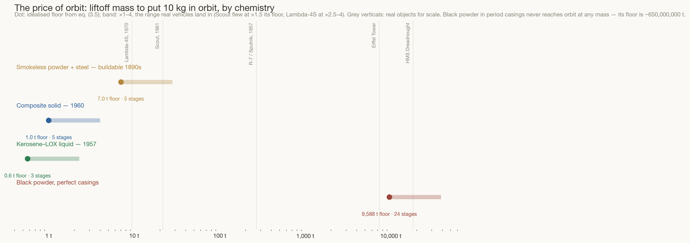
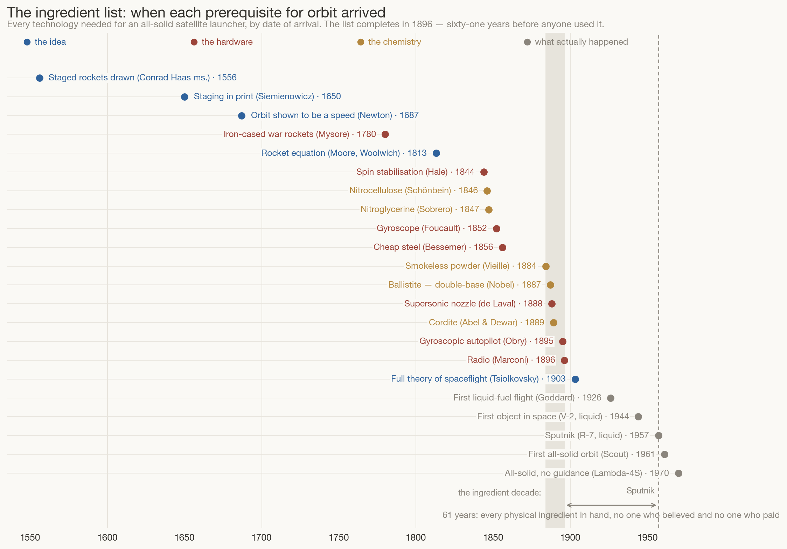

Goddard is a red herring: how early a rocket could have reached orbit, worked out with arithmetic.
Build: one session (10 July 2026), ~55 minutes wall-clock · tokens (estimated): ≈1.5M in (mostly cached context re-reads, plus rendering and visually inspecting every chart iteration) / ≈50k out (model code, charts, page, narrative) · model: Claude Fable 5. Figures are estimates from the session log, not billing telemetry.
The standard history says spaceflight became possible on 16 March 1926, in a cabbage field in Massachusetts, when Robert Goddard flew the first liquid-fuelled rocket. This essay argues the standard history answers the wrong question. Reaching orbit never required liquid fuel — solid rockets have done it, including one with no guidance system at all — and once you price orbit honestly, in the only currency that matters (exhaust velocity against the rocket equation), the ingredients were all on the shelf by about 1896. What follows is the arithmetic of that claim: where the wall really was, which invention actually breached it, and why the world then waited sixty-one years.
The first honest thing to say about a satellite is that it is not high, it is fast. Isaac Newton made the point with a thought experiment in the 1680s: fire a cannonball horizontally from a mountaintop and it lands some distance away; fire it faster and it lands farther; fire it fast enough and the Earth’s surface curves away beneath it exactly as fast as the ball falls toward it — and it never lands. Orbit is falling, sideways, indefinitely.
Newton’s picture contains the requirement, and the requirement is a number. For a circular orbit just above the atmosphere,
where is the Earth’s gravitational parameter (its mass times the constant of gravitation), its radius, and the orbit’s altitude — say 200 km, above the air. Every quantity in (3.1) was measurable in the seventeenth century, and the answer has not changed since. A real rocket must also pay tolls on the way up — it spends thrust holding itself against gravity while it climbs, and loses a little to drag4 — so the full bill is
(How to read it: , “delta-vee,” is the total change of velocity a rocket can generate — the universal currency of rocketry. The two loss terms together run 1.3–1.9 km/s for real vehicles; 9.4 is a fair central price for a small launcher to low orbit.)
So by 1687 the target was, in principle, computable. By 1813 the other half of the problem — what a rocket can actually deliver — was also in print: William Moore, a mathematics master at the Royal Military Academy at Woolwich, published the first treatise on rocket dynamics, deriving from Newton’s third law what we now call the rocket equation. Here is the detail that should make you sit up: Woolwich was simultaneously the home of the Congreve war rocket — Britain was mass-producing black-powder rockets in the same arsenal complex where Moore taught. The equation and the factory shared a postcode for a decade. Nobody multiplied them together, and — as the next section shows — it is a mercy nobody did, because the arithmetic would have said no.
Moore’s result, in Tsiolkovsky’s modern notation1:
How to read it: is the rocket’s mass at ignition, what remains at burnout, and the speed of the exhaust leaving the nozzle — equivalently the propellant’s specific impulse2 (in seconds) times standard gravity . The logarithm is the tyranny: velocity grows only as the log of the mass you burn, so the mass you need grows as the exponential of the velocity you want. And the exponent has in its denominator — which is why exhaust velocity, not thrust, not size, not fuel state, is the one number that decides who may go to space.
Two more facts complete the ledger. A stage is never all propellant: casing, nozzle and fins claim a structural fraction of its mass, so a single stage hits a hard ceiling no matter how large it grows. The escape from the ceiling is staging — drop the empty casing and light a fresh rocket — an idea already drawn by Conrad Haas in the 1550s and printed by Siemienowicz in 1650. For a stack of equal stages, each delivering , the payload each stage can carry as a fraction of its own ignition mass is
and the whole stack multiplies3:
(Indices, as always on this site: is dead weight per stage as a fraction of that stage; is payload per stage; is satellite mass over liftoff mass. When the exponential in (3.4) dips below , the numerator goes negative: the stage cannot even lift its own casing through its share of the journey, and no amount of money makes the rocket bigger enough.) Equations (3.1)–(3.5) are the entire model behind every figure below; there is nothing else in the machine.
Now feed the eras into the ledger. Black powder — the propellant of every rocket from Song-dynasty fire arrows to Congreve’s barrage at Copenhagen — has ≈ 0.7 km/s. Orbit at 9.4 km/s is thirteen times the exhaust velocity, so a single stage would need a mass ratio of ≈ 660,000 — and with period casings ( ≈ 0.45; Congreve’s rockets were roughly half iron case by weight) even infinite staging saturates below a quarter of the requirement:

This chart settles the first historical question. The gunpowder millennium never had a path to orbit. Not Song China, not Mysore, not Congreve’s Britain — not for want of ambition or treasure, but because 0.7 km/s of exhaust velocity cannot be staged, clustered, or financed into 9.4. Grant the nineteenth century perfect casings and the ledger still demands about 650 million tonnes of black powder for ten kilograms of satellite. The wall was chemical, and it stood for a thousand years.
Then, in five years, chemistry knocked it down — for reasons that had nothing to do with space. Vieille gelatinised nitrocellulose into smokeless powder (1884) so French rifles would outrange German ones; Nobel’s ballistite (1887) and the British cordite (1889) followed. Double-base powders burn with two to three times black powder’s exhaust velocity — roughly 2.1 km/s delivered through a proper nozzle — and because sits in the exponent, tripling it doesn’t triple the prospects, it transforms them: 9.4 km/s falls from thirteen exhaust-velocities to four and a half. And in a tidy coincidence of the same decade, de Laval’s convergent–divergent nozzle (1888) — invented for steam turbines — is precisely the device that converts a propellant’s heat into that exhaust velocity efficiently.
Run eq. (3.5) for a 10 kg satellite — a sphere with a battery and a radio, Sputnik at seven-eighths scale — under each era’s chemistry and structures, and the price list looks like this:

Read the top row slowly, because it is the essay’s central number. With 1890s double-base powder, 1890s steel, and a de Laval nozzle, five stages clear 9.4 km/s with a payload fraction around : a seven-tonne floor, call it twenty to thirty tonnes as built by people learning as they went. That is not a Manhattan-Project object; it is one large boiler. The same decade’s engineers were erecting the 7,300-tonne Eiffel Tower on schedule and launching steel hulls a thousand times the mass of this rocket. Money and fabrication were never the binding constraint after 1890; the constraint was that no one asked.
The model is deliberately naive — equations (3.4)–(3.5) know nothing about guidance electronics, interstages, or margin — so it is calibrated the honest way, against vehicles that actually flew: Scout (1961, four solid stages, 21.5 t) flew at 1.5× its computed floor; Lambda-4S (1970, 9.4 t) at 2.5–4×. The Victorian claim inherits that band, which is why this essay says “twenty to thirty tonnes,” not seven. The R-7 that launched Sputnik sits far off to the right at 267 tonnes — not because liquid fuel is heavy, but because it was an intercontinental missile sized to throw a hydrogen warhead; the satellite was a passenger on a weapon.
If orbit was affordable from the 1890s, the question “how early could a space rocket have been invented?” becomes a supply-chain question: list every technology an all-solid satellite launcher actually needs, and date each one’s arrival.

Three readings. First, the ideas are ancient relative to the hardware: staging predates its chemistry by three centuries, the requirement (Newton) by two, the rocket equation (Moore) by seventy years. Deep theory waited on rifle propellant. Second, the enabling inventions arrive in a single burst — smokeless powder 1884, ballistite 1887, de Laval nozzle 1888, cordite 1889, Obry’s gyroscopic autopilot 1895 (already steering torpedoes, a guided missile of the sea), Marconi’s radio 1896 (without which a satellite is unprovable — the last ingredient is not propulsion but the ability to hear your success). By 1896 the list is complete. Third, the grey rows: from that completed list to Sputnik is sixty-one years, and when orbit finally happened it was reached with liquid engines built for warheads, then re-achieved within thirteen years by solid rockets so simple (Scout, Lambda-4S) that they would have been legible — component by component — to a good engineer of 1900.
Note what Figure 4 does to 1926. Goddard’s liquid-fuelled flight sits in the grey rows, thirty years after the ingredient list closed — a landmark of what came next (throttleable, restartable, high-energy engines; the road to the Moon), not the opening of the door. The door had been standing open since the 1890s.
Counterfactuals are cheap; existence proofs are not, and this one is exact. On 11 February 1970, Japan’s Lambda-4S put the 24 kg satellite Ohsumi into orbit. The vehicle: 9.4 tonnes, every stage solid-fuelled, spin-stabilised, and — by deliberate national policy, to keep the university programme untouchable by missile politics — flown without inertial guidance. A gravity turn, a spin, one pre-programmed attitude nudge before the final burn, and physics did the rest. It failed four times between 1966 and 1969 before it worked, which is the honest footnote every counterfactual needs: nothing here says easy; everything here says possible.
Walk Lambda-4S’s parts list against Figure 4. Solid propellant: 1890s chemistry gets within ~15% of its performance. Steel and wound casings: Bessemer and after. Spin stabilisation: Hale, 1844 — Victorian artillerists spun rockets as a matter of course. Staging by timed pyrotechnics: fireworks masters, then Siemienowicz. A radio beacon: Marconi. The only components a 1900 team could not buy were the tracking radars that watched it — conveniences, not requirements. That is the sense in which Goddard is a red herring: the first satellite did not need his invention. Liquid fuel is what you need when you want to orbit tonnes — people, cameras, warheads — cheaply and steerably. To make a beacon exist in orbit, the solid path sufficed, and the solid path was open decades earlier.
What would the Victorian programme actually have looked like? A 20–30 tonne, five-stage stack of clustered cordite motors — the era could extrude cordite only in sticks, so a first stage is thousands of sticks bundled in one steel chamber, or dozens of Congreve-style unit motors ignited together: the programme’s hardest and likeliest-fatal engineering problem, along with combustion instabilities nobody had names for. Launch near the equator, spin the upper stages, sequence them with clockwork fuzes, and listen for the beacon each pass. Optimistically — a competent great-power arsenal starting in 1890 with Manhattan-style urgency — first success plausibly falls around 1900–1910. Pessimistically, add a decade for the explosions. Either way the physics had stopped saying no.
Equations (3.4)–(3.5), live. Pick an era or set the dials yourself; the ledger prices your rocket instantly. Drag the exhaust-velocity slider down to black powder and watch the mass leave the chart — that cliff is the entire history of why spaceflight waited for chemistry.
Figures 2–5 are arithmetic from stated assumptions; what follows is interpretation.
The model is eqs. (3.1)–(3.5) and nothing more: ideal equal -split staging with era parameters ( effective over the ascent / ): black powder 70 s / 0.45 in period casings (80 s / 0.10 in the counterfactually perfect ones); 1890s double-base 210 s / 0.18; 1960 composite 250 s / 0.11; kerosene–LOX 280 s / 0.08. is fixed at 9.4 km/s; low-thrust-to-weight designs would pay more gravity loss and small vehicles more drag, both of which push the Victorian estimate toward its upper band. The idealisation omits interstages, guidance mass, and margins, so all results are quoted as a floor with a ×1–4 band calibrated on Scout (×1.5) and Lambda-4S (×2.5–4). The biggest honest uncertainties in the 1890s scenario are large-grain manufacture (cordite extruded in sticks; monolithic cast grains are a 1940s art), combustion instability (not even named until the 20th century), and unguided dispersion — all engineering-iteration risks rather than physical barriers, but a sceptic may fairly move my “~1905” to “~1915”. Injection precision is graded generously: an orbit that decays in months still counts as a satellite here, as Sputnik’s did.
History: dates and masses after standard references — Moore’s 1813 treatise (see W. Johnson’s commentary), Taylor’s and Sutton’s propulsion texts for propellant performance, JAXA/ISAS records for Lambda-4S (9.4 t, 24 kg, 350×5,140 km orbit), NASA for Scout, and the usual encyclopedic sources for the invention dates in Figure 4. Specific-impulse values for historical propellants are necessarily approximate (black powder 60–100 s depending on formulation; double-base 200–235 s delivered); the conclusions survive any value in those ranges — the wall in Figure 2 moves by millimetres.
Charts generated by make_rocket_plots.py;
static versions: Fig 2 ·
Fig 3 · Fig 4
(each also as *_dark.png). The cannonball and the launcher lab are
computed live on this page from the same equations.
{kind=link}
{kind=link}
{kind=link}